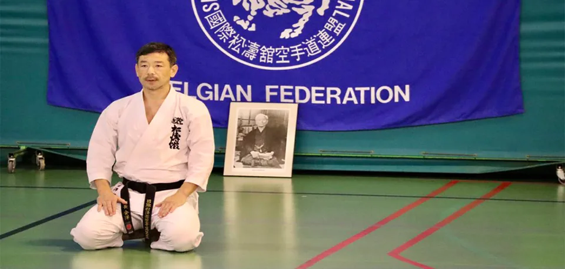

– STAGE KARATE AVEC KANCHO NOBUAKI KANAZAWA –
17 NOVEMBRE 2021
SKIF POSEIDON DOJO
Complexe sportif du Poseidon Avenue des Vaillants, 2Tres bon stage, Merci a tous les participants et tous les senseis, De beaux souvenirs du stage.
Thank you to all and domo arigato
Some Pictures of the stage